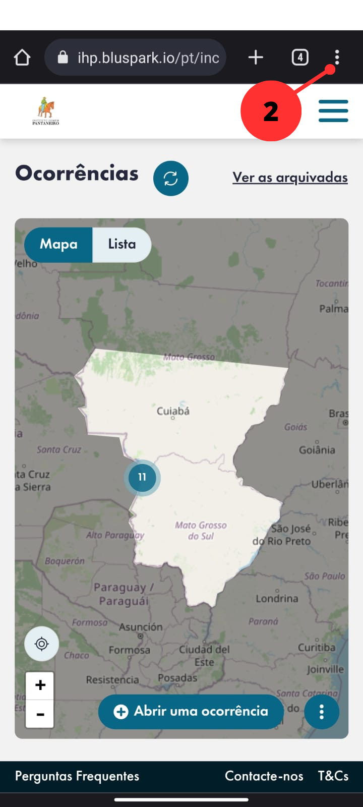

O Bluspark é um aplicativo de gerenciamento de áreas que
permite a abertura de ocorrências georreferenciadas para
equipes como Incêndio, Segurança, Meio Ambiente, Manutenções,
entre outras.
Com ele, o IHP tem uma visão clara das atividades
em andamento, melhorando a coordenação e a divulgação das ações
realizadas por cada equipe.
Tutorial Bluspark
O aplicativo é compatível com meu celular?
O aplicativo é compatível com todos os celulares,
tanto Android quanto iOS.
Além disso, ele também
funciona em navegadores e computadores, garantindo
versatilidade e acesso em diversas plataformas.
Como baixar o Aplicativo?
O aplicativo pode ser baixado direto do navegador.
1. Acesse o link: ihp.bluspark.io.
2. Clique nos três pontinhos no canto superior direito do navegador.
3. Selecione a opção "Adicionar à tela inicial".


Como funciona o aplicativo Offline?
Para utilizá-lo sem conexão à internet,
é essencial que você o tenha aberto anteriormente enquanto
estava online.
Uma vez aberto, você pode continuar usando
todas as suas funcionalidades mesmo sem acesso à internet.
Quando reconectar, as ocorrências registradas offline serão automaticamente enviadas.
Como abrir uma ocorrência com locais já definidos?
Para registrar uma ocorrência em locais previamente definidos:
- Clique em "Abrir uma ocorrência".
- No campo "Tipo de local", selecione "Local".
- Um novo campo surgirá, permitindo que você escolha locais conhecidos do IHP, como "Acurizal", "Serra Negra", entre outros.
- Além disso, você tem a opção de selecionar veículos, como "Barcos" e "Tratores".

Como abrir uma ocorrência georreferenciada?
Para registrar uma ocorrência em locais ainda não mapeados, siga os passos:
- Clique em "Abrir uma ocorrência".
- Preencha o formulário, começando pela "Prioridade".
- Selecione "Geolocalização" como tipo de local. Isso ativará dois ícones:
- O primeiro ícone localiza automaticamente sua posição atual.
- O segundo ícone abre um mapa, permitindo que você escolha um local diferente.
- Continue preenchendo o formulário com as informações necessárias e finalize o registro.
Lembre-se de que a georreferenciação é ideal para locais ainda não mapeados no sistema.

Como vizualizar as ocorrencias pelo Mapa?
Para visualizar as ocorrências no mapa, simplesmente navegue por ele.
Os círculos azuis representam a quantidade de ocorrências em cada local.
As ocorrências destacadas em vermelho são aquelas ainda não tratadas.
Para obter informações adicionais sobre uma ocorrência específica,
clique em "Veja detalhes da ocorrência".

Como vizualizar as ocorrencias por lista?
Para vizualizar as ocorrencias por lista basta clicar em "Lista" no canto superior
esquerdo.
A lista oferece uma alternativa para visualizar as ocorrências abertas,
exibindo-as em ordem de criação.
Para explorar mais detalhes sobre uma
ocorrência específica, basta clicar em "Veja detalhes da ocorrência".